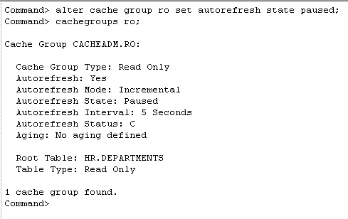
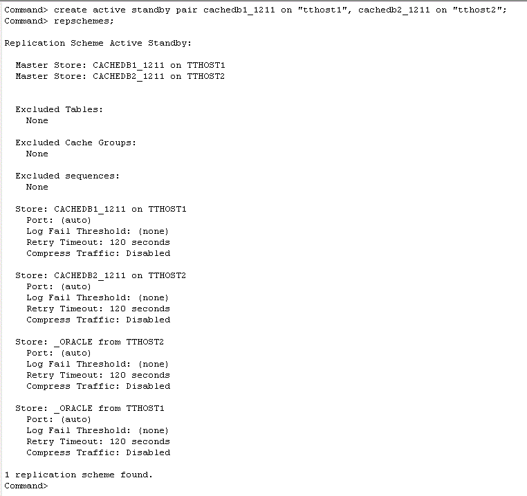

After creating an initial cache database, you can then define the configuration of the active standby pair and assign the current database (cachedb1_1211 on tthost1) as the active database.
This tutorial will make use of the DSN cachedb1_1211 as the active master database. The hostnames of the two machines in the examples are tthost1 and tthost2. cachedb1_1211 is the active cache database on tthost1, and cachedb2_1211 on tthost2 is the standby cache database.
For all the steps within this section, it is necessary to log in to ttIsql as the user cacheadm, passing in the TimesTen and Oracle user passwords for cacheadm.
3. Start the cache agentttIsql
connect "dsn=cachedb1_1211;uid=cacheadm;pwd=cacheadm;oraclepwd=cacheadm";
4. Set autorefresh state to paused
Use the built-in procedure ttCacheStart to start the cache agent if not already started.
call ttcachestart;
5. Stop the replication agent
If there are any autorefresh cache groups, their autorefresh state must be temporarily set to paused before an active standby pair can be defined. Use the ALTER CACHE GROUP SQL statement to change the autorefresh state.
alter cache group ro set autorefresh state paused;
The ttIsql command cachegroups can be used to return the properties of a cache group.
cachegroups ro;

6. Define the active standby pair
The replication agent is responsible for replicating data between TimesTen databases. It must be stopped prior to defining an active standby pair configuration. Use the built-in procedure ttRepStop to temporarily stop the replication agent if not already stopped.
call ttrepstop;
7. Set the replication state to Active
Define the active standby pair schema by using the CREATE ACTIVE STANDBY PAIR statement, which by default uses asynchronous replication.
create active standby pair cachedb1_1211 on "tthost1", cachedb2_1211 on "tthost2";
Note: The data store names cachedb1_1211 and cachedb2_1211 used in the CREATE ACTIVE STANDBY PAIR statement are not DSNs, these are the filenames defined in the data store path attribute. The hostnames used in defining the active standby pair should match the values returned by the OS hostname command on the respective servers.
The ttIsql command repschemes can be used to verify the current replication scheme deployed in the database.
repschemes;

8. Start the replication agent
Use the built-in procedure ttRepStateSet to designate the current database (cachedb1_1211) as the active cache database in the active standby pair.
call ttrepstateset ('active');
The built-in procedure ttRepStateGet returns the current replication state of the database.
call ttrepstateget;

The replication agent process is responsible for replicating data between TimesTen databases. It must be running on both databases in an active standby pair. Use the built-in procedure ttRepStart to start the replication agent on cachedb1_1211.
call ttrepstart;
After setting up an active cache database and defining the active standby pair configuration, you can now go and create the standby database.
| < Previous | 1 | 2 | 3 | Next > |